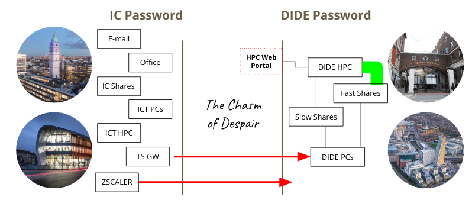

We support one cluster at present (the so-called windows cluster) but will support more in future; in particular we aim to support a Linux cluster within DIDE (“hermod”) and the central ICT/RCS cluster. In future we may support others, but we have no immediate plans to.
This vignette collects Windows-specific instructions, with the remaining vignettes aiming to be as platform-agnostic as possible.
In short, you will need:
- to know your DIDE username and password
- to have been added as a cluster user
- to be on the DIDE network, probably using ZScaler
- to be on a network share that the cluster can see
These are all explained in detail below. Once these are all
satisfied, you can initialise hipercow using
hipercow_init() use windows_check() to verify
everything works, and hipercow_hello() to submit a test
task.
Authentication with DIDE
First run the windows_authenticate() function which will
talk you through entering your credentials and checking that they work.
You only need to do this once per machine, each time you change your
password.
A typical interaction with this looks like:
> windows_authenticate()
I need to unlock the system keychain in order to load and save
your credentials. This might differ from your DIDE password,
and will be the password you use to log in to this particular
machine
Keyring password:
🔑 OK
── Please enter your DIDE credentials ──────────────────────────
We need to know your DIDE username and password in order to log
you into the cluster. This will be shared across all projects
on this machine, with the username and password stored securely
in your system keychain. You will have to run this command
again on other computers
Your DIDE password may differ from your Imperial password, and
in some cases your username may also differ. If in doubt,
perhaps try logging in at https://mrcdata.dide.ic.ac.uk/hpc and
use the combination that works for you there.
DIDE username (default: rfitzjoh) >
Password:
🔑 OK
I am going to try and log in with your password now, if this
fails we can always try again, as failure is just the first
step towards great success.
Excellent news! Everything seems to work!If you hit problems, try going to https://mrcdata.dide.ic.ac.uk/hpc and trying a few combinations until you remember what it should be. Once done update this in your password manager (perhaps BitWarden?) so you can find it easily next time.
It is possible that you do not have access to the cluster, even if your username is correct. Try logging onto the portal; if it reports that you don’t have access then please request access by messaging Wes. If you don’t know your username and password, read on.
About our usernames and passwords
For historical reasons DIDE exists on its own domain (DIDE) separate from Imperial’s domain (IC). This means that you may have a different DIDE username to your imperial username (though usually the same) and you may have a different password (though most people set these to be the same).
The overall situation is summarised in this infographic:

If you need to change your DIDE password you can do this from any DIDE domain machine by pressing Ctrl-Alt-Delete and following the prompts. If it has already expired, such that you can’t login, you need to contact Chris or Paul.
We store credentials using the keyring package. This saves your
username and password securely in your system keyring, which will be
unlocked on login for at least Windows and macOS. You will need to rerun
windows_authenticate() whenever you change your DIDE
password.
Linux users may have to install some additional system packages (on
Ubuntu/Debian etc this is libsecret-1-dev,
libssl-dev, and libsodium-dev) or you will
have to enter your keychain password each time you use hipercow.
Networks
Ensure you have connected to the DIDE network by using ZScaler; see instructions from ICT, or by being on a desktop PC or virtual machine within the building that is plugged in by Ethernet (this is less common now).
Filesystems and paths
For anything to work with hipercow on the DIDE cluster,
your working directory must be on a network share. If you are not sure
if you are on a network share, then run
getwd()Interpreting this depends on your platform (the machine you are typing commands into):
-
Windows: A drive like
C:orD:will be local. You should recognise the drive letter as one likeQ:that was mapped by default as your home orM:that you mapped yourself as a project share. -
macOS: The path will likely be below
/Volumes(but not one that corresponds to a USB stick of course!) -
Linux: The path should start at one of the mount
points you have configured in
/etc/fstabas a network path.
Project shares and home directories
In general we strongly recommend that you use
project shares for any serious work, rather than your home directory. To
organise these you should talk to your PI (or if you are a PI, talk to
Chris). The advantages of the project shares are that they are larger
(so you will run out of disk space more slowly) and faster than the home
shares. If you launch many tasks at once that use your home share you
can get unexpected failures as the disk can’t keep up with amount of
data being read and written. Don’t use your home directory (generally
Q: on windows) for anything more intensive than casual
experimentation. We have seen many people with jobs that fail
mysteriously on their network home directory when launched in parallel,
and this is generally fixed by using a project share.
If you don’t know if you have a project share, talk to your PI about if one exists. If you are a PI, talk to Chris (and/or Wes) about getting one set up.
See below about the current state of the Windows cluster, and some fast storage that you might want to use.
Mapping network drives
For all operating systems, if you are on the wireless network you will need to connect to the department network using ZScaler; see the ICT documentation for details. If you can get on a wired network you’ll likely have a better time because the VPN and wireless network seems less stable in general (it is not clear how this will be in the new building at White City, or indeed how many wired points there will be).
Below, instructions for setting up depend on the sort of computer you are typing commands into at the moment (not the cluster type).
Windows
If you are using a windows machine in the DIDE domain, then your
network drives are likely already mapped for you. In fact you should not
even need to map drives as fully qualified network names
(e.g. //projects/tmp) should work for you.
macOS
In Finder, go to Go -> Connect to Server... or press
Command-K. In the address field write the name of the share
you want to connect to. You will likely want to mount:
smb://qdrive.dide.ic.ac.uk/homes/<username>which is your home share.
At some point in the process you should get prompted for your username and password, but I can’t remember what that looks like.
This directory will be mounted at
/Volumes/<username> (so the last bit of the filename
will be used as the mountpoint within Volumes). There may
be a better way of doing this, and the connection will not be
reestablished automatically so if anyone has a better way let me
know.
Linux
This is what Rich has done on his computer and it seems to work, though it’s not incredibly fast. Full instructions are on the Ubuntu community wiki.
First, install cifs-utils
sudo apt-get install cifs-utilsIn your /etc/fstab file, add
//qdrive.dide.ic.ac.uk/homes/<dide-username> <home-mount-point> cifs uid=<local-userid>,gid=<local-groupid>,credentials=/home/<local-username>/.smbcredentials,domain=DIDE,sec=ntlmssp,iocharset=utf8 0 0where:
-
<dide-username>is your DIDE username without theDIDE\bit. -
<local-username>is your local username (i.e.,echo $USER). -
<local-userid>is your local numeric user id (i.e.id -u $USER) -
<local-groupid>is your local numeric group id (i.e.id -g $USER) -
<home-mount-point>is where you want your DIDE home directory mounted
please back this file up before editing.
So for example, I have:
//qdrive.dide.ic.ac.uk/homes/rfitzjoh /home/rich/net/home cifs uid=1000,gid=1000,credentials=/home/rich/.smbcredentials,domain=DIDE,sec=ntlmssp,iocharset=utf8 0 0The file .smbcredentials contains
username=<dide-username>
password=<dide-password>and set this to be chmod 600 for a modicum of security, but be aware your password is stored in plaintext.
This set up is clearly insecure. I believe if you omit the credentials line you can have the system prompt you for a password interactively, but I’m not sure how that works with automatic mounting.
Finally, run
sudo mount -ato mount all drives and with any luck it will all work and you don’t have to do this until you get a new computer.
If you are on a laptop that will not regularly be connected to the
internal network, you might want to add the option noauto
to the above
//qdrive.dide.ic.ac.uk/homes/rfitzjoh /home/rich/net/home cifs uid=1000,gid=1000,credentials=/home/rich/.smbcredentials,domain=DIDE,sec=ntlmssp,iocharset=utf8,noauto 0 0and then explicitly mount the drive as required with
sudo mount ~/net/homeInitialisation
For most use, it will be sufficient to write:
library(hipercow)
hipercow_init(driver = "dide-windows")
#> ✔ Initialised hipercow at '.'
#> ✔ Configured hipercow to use 'dide-windows'By default, we aim to automatically detect your shares, and we believe this works on Windows, macOS and Linux. If you are running on a network share and the configuration errors because it cannot work out what share you are on, please let us know.
Does it work?
All the above steps can be checked automatically:
library(hipercow)
hipercow_init(driver = "dide-windows")
#> ℹ hipercow already initialised at '.'
#> ℹ Configuration for 'dide-windows' unchanged
windows_check()
#> ✔ Found DIDE credentials for 'rfitzjoh'
#> ✔ DIDE credentials are correct
#> ✔ Connection to private network working
#> ✔ Path looks like it is on a network share
#> ℹ Using '/home/rfitzjoh/net/home/cluster/hipercow-vignette/hv-20240604-dec04703b1b8c'
#> ✔ 'hipercow' and 'hipercow.windows' versions agree (1.0.20)Try a test task:
hipercow_hello()
#> ✔ Found DIDE credentials for 'rfitzjoh'
#> ✔ DIDE credentials are correct
#> ✔ Connection to private network working
#> ✔ Path looks like it is on a network share
#> ℹ Using '/home/rfitzjoh/net/home/cluster/hipercow-vignette/hv-20240604-dec04703b1b8c'
#> ✔ 'hipercow' and 'hipercow.windows' versions agree (1.0.20)
#> ✔ Submitted task 'cf19fc94862413860cd75be29983ecf5' using 'dide-windows'
#>
#> ── hipercow 1.0.12 running at 'V:/cluster/hipercow-vignette/hv-20240604-dec04703
#> ℹ library paths:
#> •
#> V:/cluster/hipercow-vignette/hv-20240604-dec04703b1b8c/hipercow/lib/windows/4.4.0
#> • I:/bootstrap/4.4.0
#> • C:/Program Files/R/R-4.4.0/library
#> ℹ id: cf19fc94862413860cd75be29983ecf5
#> ℹ starting at: 2024-06-04 09:03:15.960727
#> ℹ Task type: expression
#> • Expression: { [...]
#> • Locals: moo
#> • Environment: default
#> • Environment variables: R_GC_MEM_GROW, CMDSTAN, and CMDSTANR_USE_R_TOOLS
#> ───────────────────────────────────────────────────────────────── task logs ↓ ──
#> -----
#> Moooooo!
#> ------
#> \ ^__^
#> \ (oo)\ ________
#> (__)\ )\ /\
#> ||------w|
#> || ||
#>
#> ───────────────────────────────────────────────────────────────── task logs ↑ ──
#> ✔ status: success
#> ℹ finishing at: 2024-06-04 09:03:15.960727 (elapsed: 0.3627 secs)
#> ✔ Successfully ran test task 'cf19fc94862413860cd75be29983ecf5'See the overall configuration (we will often ask for this):
hipercow_configuration()
#>
#> ── hipercow root at /home/rfitzjoh/net/home/cluster/hipercow-vignette/hv-20240604-dec04703b1b8c ──────────────────
#> ✔ Working directory '.' within root
#> ℹ R version 4.4.0 on Linux (rfitzjoh@wpia-dide300)
#>
#> ── Packages ──
#>
#> ℹ This is hipercow 1.0.20
#> ℹ Installed: hipercow.windows (1.0.20), conan2 (1.9.99), logwatch (0.1.1)
#>
#> ── Environments ──
#>
#> ── default
#> • packages: (none)
#> • sources: (none)
#> • globals: (none)
#>
#> ── empty
#> • packages: (none)
#> • sources: (none)
#> • globals: (none)
#>
#> ── Drivers ──
#>
#> ✔ 1 driver configured ('dide-windows')
#>
#> ── dide-windows
#> • cluster: wpia-hn
#> • shares: 1 configured:
#> → (local) /home/rfitzjoh/net/home => \\qdrive.dide.ic.ac.uk\homes\rfitzjoh => V: (remote)
#> • r_version: 4.4.0
#> • path_lib: hipercow/lib/windows/4.4.0
#> • username: rfitzjohThe Windows Cluster
As of February 2024, we have one Windows cluster called
wpia-hn hosted in South Kensington, built mainly with
recent nodes, but as our departure from St. Mary’s continues, some older
but still capable nodes will be added to it - and this section will get
updated as we go.
The Nodes
In the hipercow root we just made, we can have a look at what the
cluster is like with hipercow_cluster_info(). This gives us
information we can then use with hipercow_resources to
request particular resources. See vignette("parallel") for
more information.
hipercow_cluster_info()
#> $resources
#> $resources$max_cores
#> [1] 32
#>
#> $resources$max_ram
#> [1] 512
#>
#> $resources$queues
#> [1] "AllNodes" "Training"
#>
#> $resources$default_queue
#> [1] "AllNodes"
#>
#> $resources$nodes
#> [1] "wpia-001" "wpia-002" "wpia-003" "wpia-004" "wpia-005" "wpia-006"
#> [7] "wpia-007" "wpia-008" "wpia-009" "wpia-010" "wpia-011" "wpia-012"
#> [13] "wpia-013" "wpia-014" "wpia-015" "wpia-016" "wpia-017" "wpia-018"
#> [19] "wpia-019" "wpia-020" "wpia-021" "wpia-022" "wpia-023" "wpia-024"
#> [25] "wpia-025" "wpia-026" "wpia-027" "wpia-028" "wpia-029" "wpia-030"
#> [31] "wpia-031" "wpia-032" "wpia-033" "wpia-034" "wpia-035" "wpia-036"
#> [37] "wpia-037" "wpia-038" "wpia-039" "wpia-040" "wpia-043" "wpia-044"
#> [43] "wpia-045" "wpia-046" "wpia-047" "wpia-048" "wpia-051" "wpia-052"
#> [49] "wpia-053" "wpia-054" "wpia-055" "wpia-056" "wpia-057" "wpia-058"
#> [55] "wpia-059" "wpia-060" "wpia-061" "wpia-062" "wpia-063" "wpia-064"
#> [61] "wpia-065" "wpia-066" "wpia-067" "wpia-068" "wpia-069" "wpia-070"
#>
#>
#> $r_versions
#> [1] '4.2.3' '4.3.0' '4.3.2' '4.3.3' '4.4.0'
#>
#> $redis_url
#> [1] "wpia-hn.hpc.dide.ic.ac.uk"Nodes: At present we have around 70 nodes, numbered from
wpia-001towpia-070- there are a few missing from the list of nodes because they are serving other purposes not on the Windows cluster.Cores: at present, the largest node on this cluster has 32 cores - in fact all of the nodes do. This will change as we grow the cluster, but for now, all the nodes are similar. The 32-core nodes are our favourite compromise at the moment between power usage, computational speed, and density, because physical space is limited.
Memory: most of the nodes have 512Gb of RAM; only nodes 059-070 are slightly smaller with 384Gb. This will change; some larger nodes may arrive, and we may try and beef up some older nodes to ensure you have enough RAM per job.
Queues: at present we have one main queue
AllNodeswhich all users have access to. There is an additional node currently reserved forTrainingand development, and if you come to a hipercow workshop, you will likely submit small jobs to this one.AllNodesis the default queue.R versions: you can see a few R versions that are supported on all cluster nodes, including the most recent, and a couple of older versions. Over time, we will retire the
4.0.xand4.1.xversions, as they aren’t updated any more, and packages may stop working with them.The redis URL is not something you need to do anything with for the moment.
The Network
The headnode, wpia-hn.hpc.dide.ic.ac.uk has storage
which is connected to all the cluster nodes via a fast InfiniBand
network. When the cluster nodes talk to that share, they will do so over
the fast network without you having to do anything special.
The storage can also be mapped (or mounted) so you can see the same files from your desktop or laptop. You’ll need access to some share on that drive - talk to your PI about that - and then follow the instructions earlier in this vignette for how to map it.
The important thing is that you should definitely use this storage if possible for any cluster tasks doing a significant amount of file reading or writing, and it’s highly recommended to use it for all work using this cluster.